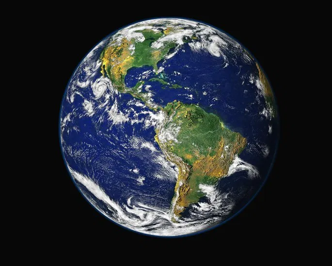
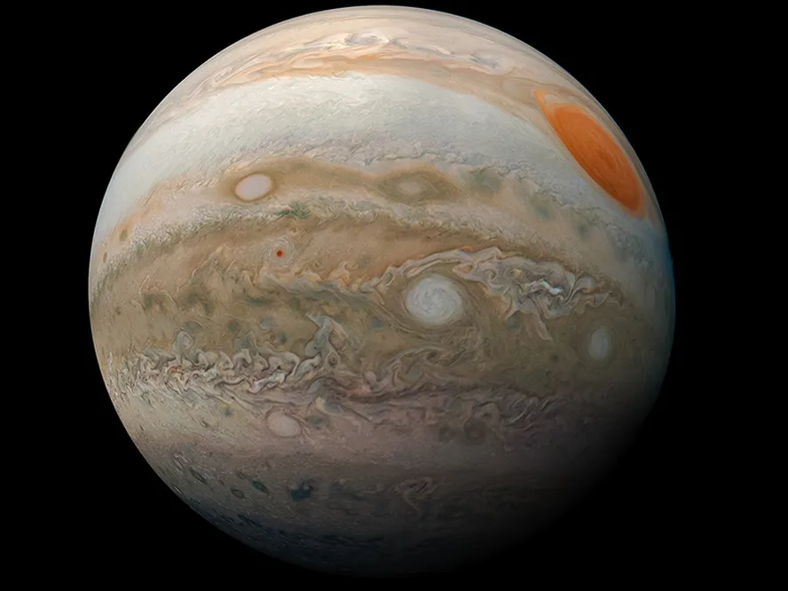
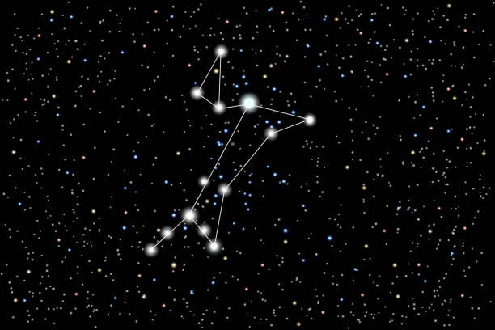
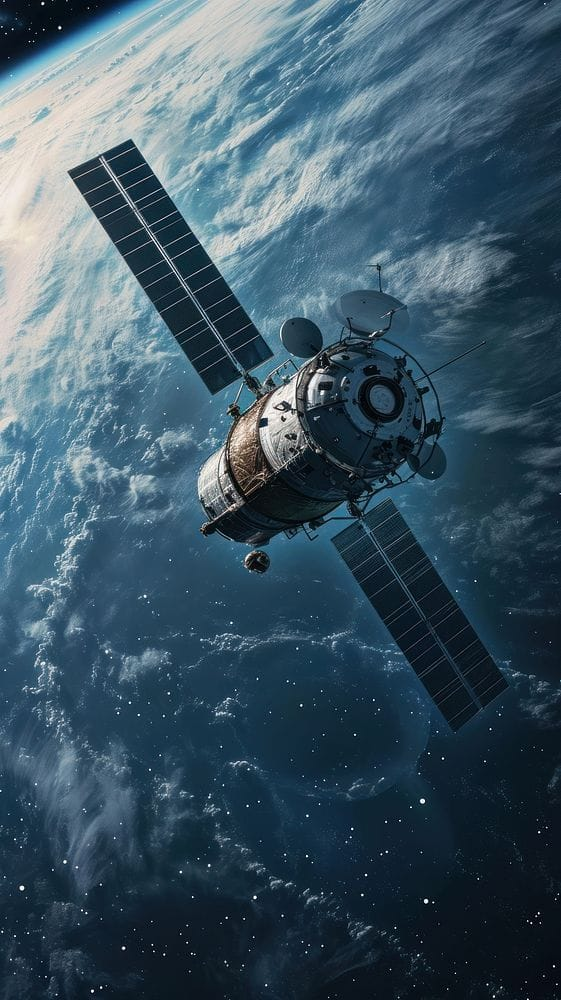
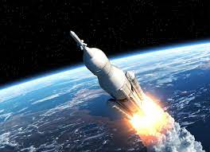

Astrologia
A humanidade sempre buscou no céu as respostas para a sua existência. Da astronomia babilônica à cosmologia moderna, a observação do universo impulsionou o conhecimento humano. No entanto, em pleno século XXI, a linha que separa a ciência da pseudociência, como a astrologia, permanece tênue no imaginário popular. Embora a astrologia não possua validação científica, sua popularidade sugere uma contribuição não no campo do conhecimento factual, mas na esfera da necessidade humana por significado e orientação.
Planetas
-
Mercúrio

- O mais rápido a orbitar o Sol: Mercúrio viaja a cerca de 170.000 km/h, completando uma órbita em apenas 88 dias terrestres.
- Temperaturas extremas: Durante o dia, as temperaturas podem chegar a 430°C, mas a falta de uma atmosfera densa faz com que caiam para -170°C à noite.
- Dia mais longo que o ano: Um dia em Mercúrio (período de rotação) dura aproximadamente 59 dias terrestres, o que é quase tão longo quanto seu ano (88 dias terrestres).
-
Vênus
- O planeta mais quente: Apesar de não ser o mais próximo do Sol, Vênus é o planeta mais quente, com uma temperatura média de 462°C, devido à sua atmosfera densa de dióxido de carbono que retém o calor (efeito estufa extremo).
- Rotação retrógrada: Vênus gira em sentido horário em torno de seu eixo, o oposto da maioria dos outros planetas do sistema solar.
- Um dia dura mais que um ano: Um dia em Vênus (243 dias terrestres) é mais longo do que um ano em Vênus (225 dias terrestres).
-
Terra
- Único com vida conhecida: A Terra é o único planeta que se sabe ter água líquida em abundância, placas tectônicas ativas e uma atmosfera rica em oxigênio, condições essenciais para a vida como a conhecemos.
- Nome não mitológico: É o único planeta cujo nome não se refere a um deus ou deusa da mitologia, vindo do inglês e germânico antigos que significam "solo".
- Origem da Lua: A teoria mais aceita sugere que a Lua se formou a partir dos detritos de uma colisão gigante entre a jovem Terra e um protoplaneta do tamanho de Marte, chamado Theia, há cerca de 4 bilhões de anos.
-
Marte

- O Planeta Vermelho: Sua cor característica vem de minerais de ferro oxidados (ferrugem) presentes na poeira e nas rochas de sua superfície.
- Maior vulcão do sistema solar: Marte abriga o Monte Olimpo, um vulcão adormecido que é o maior do sistema solar, com cerca de 25 km de altura (quase três vezes o Monte Everest).
- Gravidade mais baixa: A gravidade em Marte é apenas 37% da gravidade da Terra, o que permitiria a uma pessoa pular três vezes mais alto do que faria aqui.
-
Júpiter
- O gigante do sistema solar: Júpiter é tão grande que 1.300 planetas do tamanho da Terra caberiam dentro dele.
- A Grande Mancha Vermelha: Esta é uma tempestade anticiclônica gigante que existe há pelo menos 300 anos e é maior do que o planeta Terra.
- Dia mais curto: Apesar de seu tamanho massivo, Júpiter tem o dia mais curto de todos os planetas, girando em seu eixo em apenas cerca de 10 horas.
-
Saturno
- Anéis espetaculares: Embora outros planetas gasosos tenham anéis, os de Saturno são os mais proeminentes, complexos e visualmente deslumbrantes, compostos principalmente de gelo e rocha.
- Flutuaria na água: Saturno é o único planeta do sistema solar menos denso que a água. Se você pudesse encontrar uma banheira grande o suficiente, ele flutuaria.
- Numerosas luas: Saturno possui 146 luas conhecidas, mais do que qualquer outro planeta no sistema solar.
-
Urano

- Gira "deitado": Urano tem uma inclinação axial extrema de 98 graus, fazendo-o girar de lado em relação à sua órbita.
- Estações extremas: Devido à sua inclinação, cada polo de Urano passa por 42 anos de luz solar contínua, seguidos por 42 anos de escuridão total.
- Primeiro descoberto por telescópio: Urano foi o primeiro planeta a ser descoberto usando um telescópio, em 1781, por William Herschel.
-
Netuno
- Ventos mais rápidos: Netuno tem os ventos mais fortes do sistema solar, atingindo velocidades supersônicas de mais de 2.100 km/h.
- Cor azul vibrante: Sua cor azul intensa é resultado da presença de gás metano em sua atmosfera, que absorve a luz vermelha e reflete a luz azul.
- Descoberta por matemática: A localização de Netuno foi prevista usando cálculos matemáticos das perturbações gravitacionais na órbita de Urano antes de ser observado fisicamente.
-
Plutão

- Órbita excêntrica: A órbita de Plutão é tão inclinada e elíptica que, às vezes, ele fica mais próximo do Sol do que Netuno (como ocorreu entre 1979 e 1999).
- Coração de gelo: A característica geográfica mais famosa de Plutão é a "Sputnik Planitia", uma vasta planície em forma de coração composta principalmente por gelo de nitrogênio.
- Reclassificação em 2006: Plutão foi reclassificado como planeta anão pela União Astronômica Internacional (IAU) porque, ao contrário dos planetas "tradicionais", ele não "limpou" sua órbita de outros objetos no Cinturão de Kuiper.
Constelações
-
Órion
- Forma: É uma das constelações mais reconhecíveis, com um padrão em forma de ampulheta e um cinto de três estrelas brilhantes, conhecido como as Três Marias.
- Visibilidade: Pode ser vista em quase todo o mundo, sendo proeminente no céu noturno de verão (Hemisfério Sul) ou inverno (Hemisfério Norte).
- Estrelas notáveis: Inclui Rigel e Betelgeuse, uma das estrelas mais brilhantes e maiores que o Sol.
-
Cruzeiro do Sul
- Forma: A menor das 88 constelações oficiais, tem o formato de uma cruz, semelhante a uma pipa.
- Visibilidade: É uma das constelações mais icônicas e facilmente observáveis do Hemisfério Sul, sendo visível durante quase todo o ano no Brasil.
- Orientação: É usada para identificar o ponto cardeal sul, pois seu braço mais longo aponta para a direção do Polo Sul Celeste.
-
Cão Maior
- Forma: Antiga constelação que representa um dos cães de caça de Órion.
- Estrela notável: Abriga Sirius, a estrela mais brilhante do céu noturno.
- Curiosidade: O nome Sirius, que em grego significa "queimador", está ligado ao termo "dias de cão" do verão, pois acreditava-se que seu calor se somava ao do Sol nessa época.
-
Ursa Maior
- Forma: A terceira maior constelação, suas sete estrelas mais brilhantes formam o asterismo conhecido como a "caçarola" ou "carro".
- Visibilidade: É circumpolar (sempre visível) para observadores no Hemisfério Norte.
- Orientação: Duas de suas estrelas mais brilhantes, Dubhe e Merak, podem ser usadas para apontar para Polaris, a Estrela Polar.
-
Cassiopeia

- Forma: Uma constelação do Hemisfério Norte, tem um formato característico em "W" ou "M".
- Composição: É rica em enxames estelares abertos e abriga a Cassiopeia A, um forte remanescente de supernova.
- Visibilidade: Visível o ano inteiro no Hemisfério Norte, pode ser vista em algumas épocas do ano no Hemisfério Sul.
-
Virgem
- Forma: Uma das maiores constelações, tem uma forma que se assemelha a uma mulher sentada.
- Composição: Abriga um aglomerado de cerca de 2.000 galáxias e a estrela Spica, a mais brilhante da constelação.
- Visibilidade: Visível durante a primavera no Hemisfério Sul, aparece no leste após o pôr do sol.
-
Leão

- Forma: Constelação zodiacal que representa o Leão de Nemeia da mitologia grega.
- Estrela notável: A estrela mais brilhante é Regulus, que significa "pequeno rei" em latim.
- Visibilidade: É visível no Hemisfério Sul durante o outono. As estrelas na juba e nos ombros do leão formam um asterismo em forma de foice.
-
Pégaso
- O Grande Quadrado de Pégaso: A característica mais marcante da constelação é o "Grande Quadrado de Pégaso", um asterismo (padrão de estrelas) facilmente reconhecível no céu.
- Objeto de céu profundo: Pégaso abriga a M15, um aglomerado globular denso e impressionante, com milhares de estrelas.
- A estrela mais brilhante: A estrela mais brilhante de Pégaso não faz parte do quadrilátero, é a estrela supergigante Enif (Epsilon Pegasi), que se encontra na ponta do focinho do cavalo.
Curiosidades
-
Seres Humanos
- Ponto mais distante: A maior distância que seres humanos já viajaram foi aproximadamente 400.000 km da Terra, durante a missão Apollo 8, que orbitou a Lua em 1968.
- Pouso na Lua: Na missão Apollo 11, em 1969, os astronautas pisaram na Lua, que está a cerca de 380.000 km da Terra.
- Órbita atual: Atualmente, os astronautas vivem e trabalham na Estação Espacial Internacional (ISS), que orbita a Terra a uma altitude muito menor, cerca de 400 km.
-
Stephenson 2-18
- Tamanho colossal: Seu raio é estimado em cerca de 2.150 vezes maior que o do nosso Sol.
- Se estivesse em nosso sistema solar: Se ela fosse colocada no centro do nosso sistema solar, sua superfície se estenderia para além da órbita de Saturno. Planetas como Mercúrio, Vênus, Terra e Marte seriam engolidos pela estrela.
- Classificação: É uma hipergigante vermelha, um tipo de estrela extremamente rara e de vida curta, que queima seu combustível nuclear muito rapidamente e provavelmente terminará sua vida em uma supernova colossal.
-
Marte - Próximos passos?
- Recursos: O planeta possui gelo de água, que pode ser extraído para beber, para a agricultura, ou dividido em hidrogênio e oxigênio para combustível de foguete e ar respirável.
- Futuro da humanidade: O estabelecimento de uma colônia em Marte é visto por muitos como um "plano B" para a sobrevivência a longo prazo da espécie humana, caso a Terra se torne inabitável.
- SpaceX: A empresa de Elon Musk tem planos ambiciosos e mais imediatos. Eles estão desenvolvendo o sistema de lançamento Starship, um foguete gigante projetado para transportar até 100 pessoas e toneladas de carga para Marte. O objetivo é estabelecer uma cidade autossustentável.
-
Satélites
Desde o lançamento do Sputnik pela União Soviética em 1957, milhares de satélites artificiais foram enviados ao espaço. Em maio de 2025, havia aproximadamente 11.700 satélites ativos orbitando a Terra.
- Observação da Terra: Monitoramento do clima, previsão do tempo, detecção de desmatamento, queimadas, inundações e gestão de recursos naturais.
- Ciência e Exploração: Telescópios espaciais como o Hubble, que estudam o cosmos, e um laboratório orbital para pesquisas científicas.
- Navegação: Sistemas de posicionamento global (GPS) para uso civil e militar.
-
Via Láctea
- Tipo e Forma: A Via Láctea é classificada como uma galáxia espiral barrada. Ela tem uma estrutura complexa que inclui um disco, um bojo central e um halo.
- Movimento: Todo o nosso Sistema Solar orbita o centro da galáxia. Levamos cerca de 240 milhões de anos para completar uma única órbita.
- Formação e Idade: A Via Láctea tem aproximadamente 12 bilhões de anos, existindo desde quase a criação do universo.
-
Robos espaciais
- O que são: Sistemas eletrônicos projetados para auxiliar ou substituir humanos em missões de exploração e pesquisa no espaço, operando em condições extremas onde a presença humana seria muito arriscada ou inviável.
- Exploração: Coletar dados, amostras de solo e rochas, e analisar a composição de planetas, luas, asteroides e cometas (ex: Rovers em Marte).
- Futuro: O futuro envolverá robôs mais autônomos e integrados com inteligência artificial, capazes de realizar tarefas mais complexas em menos tempo. Tecnologias de teleoperação avançada, que dão aos operadores na Terra uma sensação de toque virtual, permitirão a manipulação precisa de ferramentas em missões distantes na Lua e em Marte. Robôs macios e adaptáveis, capazes de suportar condições extremas, também estão em desenvolvimento.
-
Problemas abordados em WALL-E
- Poluição e Acúmulo de Lixo: A premissa central do filme é um planeta Terra inabitável, completamente coberto por montanhas de lixo e detritos, resultado do descarte desenfreado de produtos pelos humanos.
- Sedentarismo e Obesidade: Devido à dependência de tecnologia e à vida em um ambiente artificial, os humanos se tornaram obesos e sedentários, incapazes de se mover sem a ajuda de veículos automáticos.
- Dependência Excessiva da Tecnologia: O filme critica a forma como a tecnologia, que deveria ser uma ferramenta para melhorar a vida, transformou os humanos em seus "escravos", controlando todos os aspectos de suas rotinas diárias, desde a alimentação até a locomoção.
-
Foguetes
- O que são: São veículos propulsores que utilizam a força de reação para se mover, com o objetivo principal de enviar cargas úteis, como satélites, sondas espaciais e humanos, para o espaço.
- Ação: O foguete queima grandes quantidades de combustível (propelente) em sua câmara de combustão, gerando gases extremamente quentes que são expelidos em alta velocidade pela tubeira (parte inferior).
- Era Espacial: Durante a Guerra Fria, a tecnologia de foguetes avançou rapidamente com o desenvolvimento de mísseis balísticos e, posteriormente, veículos lançadores para a exploração espacial. Foguetes notáveis como o Saturno V (missões Apollo para a Lua) e o Soyuz soviético marcaram a história.
Extras
-
Exoplanetas
-
Cometas
-
Estrelas

-
Galáxias
-
Buracos Negros
-
Nebulosas